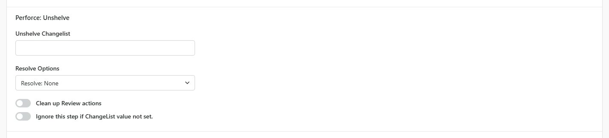

Perforce: Unshelve
A build step that puts a shelved Perforce changelist into the build's workspace, so the build tests a change that is not submitted yet.
When to use it
Use it when a build configuration uses the Perforce Software version control and a build must test a shelf you name, for example from a build parameter. For a build configuration that uses a Perforce root, use Perforce root: unshelve instead. To test a shelf by hand, the Shelved changes tab of the Run dialog is easier. See Shelves.
A shelf is a set of files stored on the Perforce server but not submitted. Unshelve copies them into your workspace.
How to set it up
- Open the build configuration and go to Settings › Build steps.
- Click Add build step, type
Unshelvein Filter step types and click Perforce: Unshelve. - Fill in the fields below.
- Make sure the step comes after the sync. The sync happens before all steps, so any position works. Put it before the compile step.
- Click Save.

Every field
| Field | What it does | Default | Example |
|---|---|---|---|
| Unshelve Changelist | The number of the shelved changelist. Build parameters can be used. | Empty | ${SHELF} |
| Resolve Options | What to do when a shelved file also changed in the workspace. Resolve: None does not resolve. Safe (-as) resolves only files with no conflict. Merge (-am) merges what it can. Force Merge (-af) merges and leaves conflict marks. Yours (-ay) keeps your edits. Theirs (-at) keeps the shelf content. | The first in the list | Resolve: Safe (-as) |
| Clean up Review actions | Removes review actions the unshelve left behind. | Off | Off |
| Ignore this step if ChangeList value not set. | If the changelist field is empty after parameters are filled in, the step does nothing and succeeds. Without it, an empty value fails the step. | Off | On |
A worked example
The Skyforge team has a build parameter SHELF on Windows Build. Artists leave it empty for normal builds. A programmer who wants to test a shelf types its number.
| Unshelve Changelist | ${SHELF} |
| Resolve Options | Resolve: Safe (-as) |
| Ignore this step if ChangeList value not set. | On |
What you see when it runs
The log shows the Perforce unshelve and the resolve. The changes of the build then list the shelved changelist first, followed by the changelists since the last build.
Problems and fixes
| You see | What to do |
|---|---|
| The step fails at once, with a number error | The field is empty or not a number, and Ignore this step if ChangeList value not set is off. Fill it in or tick the box. |
| The step fails on a build configuration with a Perforce root | Use Perforce root: unshelve. |
| Files stay in conflict | Choose a different Resolve Options, or bring the shelf up to date and shelve it again. |
Related pages
- Perforce root: unshelve
- Perforce operations (Unshelve operation)
- Shelves, Test a shelved change before you submit